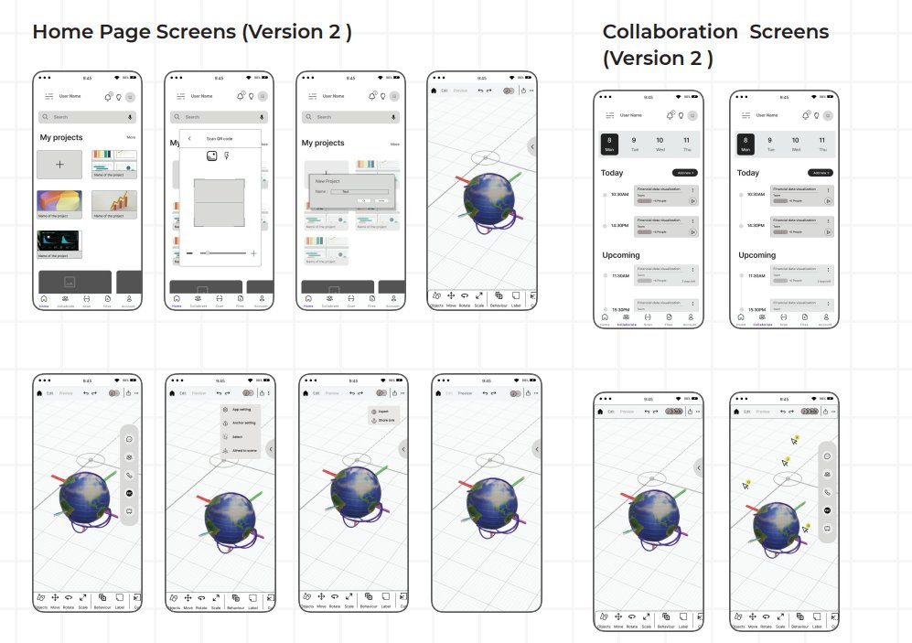

01
Phone-based AR, not a VR headset
- Evidence
- Stakeholders asked for an immersive experience. The literature review compared AR and VR on ergonomics and ease of use.
- Options
- VR headset · AR on phones and tablets · improve 2D dashboards
- Decision
- AR on the phones people already carry.
- Why
- No extra hardware. People stay aware of the room and each other, which matters in a meeting.
- Trade-off
- A small screen and less immersion than VR. AR also depends on finding a flat surface.
